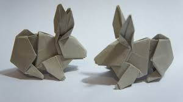

Origami instructions and diagrams
Step-by-step diagrams are probabbly the most popular and easiest way to show how to fold things out of paper.Trying to find good origami instructions on the Internet can be a lot of work though. To help your search we've
put together the largest database of free origami diagrams anywhere on the Internet.

Camel
Interesting facts about camels
- Camels can completely shut their nostrils during sandstorms.
- When a camel finally does find water, he can drink up to 40 gallons in one go.
- There are over 160 words for camel in Arabic alone.

Chameleon
Interesting facts about chameleons
- Almost half of all known species live in Madagascar.
- They mainly change colour to communicate or regulate body temperature.
- Unlike may lizards, chameleons can't regrow their tails.

Cicada
Interesting facts about cicadas
- Cicadas are like tiny violins.
- They’re underground builders.
- The loud whirring or buzzing sound you hear is an all-male cicada chorus.
Panda
Interesting facts about pandas
- Giant pandas spend 10-16 hours a day feeding, mainly on bamboo.
- Like domestic cats, giant pandas have vertical slits for pupils.
- Pandas rely on spatial memory, not visual memory.

Pigeon
Interesting facts about pigeons
- Pigeons are incredibly complex and intelligent animals.
- Pigeons and humans have lived in close proximity for thousands of years.
- They can hear distant storms and volcanoes.

Teddy Bear
Interesting facts about teddy bears
- The Oxford English Dictionary dates the first use of the term teddy bear to 1906.
- The Teddy Bears’ Picnic song was originally called The Teddy Bear Two Step.
- They’re the best-traveled toys.

Dog
Interesting facts about dogs
- Dogs noses are wet to help absorb scent chemicals.
- Three dogs survived the Titanic sinking.
- Dogs have three eyelids.

Rabbit
Interesting facts about rabbits
- A rabbit’s teeth never stop growing!
- Rabbits’ eyes are on the sides of their head.
- They can't live off carrots.